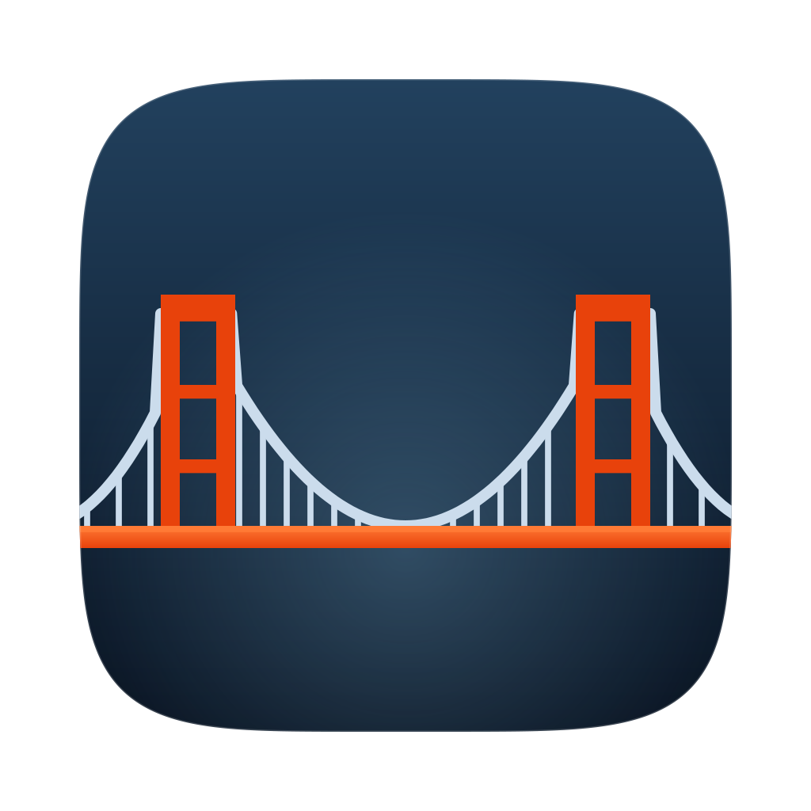
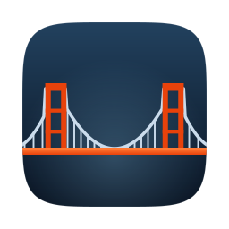
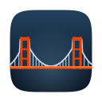

It is called a
Bridge. So it is
a bridge.
Two towers, a main cable sagging to meet the deck at midspan, hangers, and side spans running down to their anchorages. Drawn as an elevation, the way a bridge is drawn on a drawing.
Why the literal thing works here
The product's name is the picture, so the icon needs no decoding and no metaphor to explain. A suspension bridge also has a silhouette almost nobody misreads: nothing else in a Dock is two towers with a cable slung between them.
International Orange earns its place twice. It is the colour the Golden Gate is actually painted, specified because it holds against sky and fog, and it is the one hue that keeps contrast on both a white Chromium toolbar and a near-black Gecko one. Deliberately not Microsoft blue: Entra is the only identity provider v1 implements, but this is not a Microsoft product and should not dress like one.
Engineering the drawing
The cables are computed, not sketched. The main span is a parabola through both tower saddles, sagging exactly to the deck at midspan the way a real main cable does; each side span is a parabola with its vertex at the anchorage, so it leaves the tower steeply and flattens as it lands. Over each tower the cable runs flat across the saddle instead of dipping between the legs, which is both what a saddle does and what stops a bright kink appearing inside the tower.
The towers sit at a little over half the icon's width apart and stand about a third of its height above the deck, which leaves enough sky and water that the bridge reads as a view rather than as a diagram pressed against the frame.
The body is a superellipse sampled from |x|⁵ + |y|⁵ = 1, not a rounded rectangle, so the corners stay continuous the way the system's own icons do.
Two cuts, because 16 px is not a small 512
At 16 px one unit of the drawing canvas is a sixty-fourth of a device pixel, so the full drawing's hangers and tower braces vanish into the field. At 16 and 32 px the icon switches to a second cut: single-post towers, no braces, a heavier deck, a thicker cable, no hangers, and a flat field instead of the gradient. From 64 px up the full drawing holds, so it is what the iconset uses there.


Toolbar icon, in both engines
One colour, no container, no plate behind it. A tinted glyph would need a light and a dark variant, and Chromium has no theme-aware icon key to switch them with, so the mark carries its own colour instead.
The toolbar cut is cropped to the main span and drops the side cables entirely. Run down to their anchorages at this size they stop reading as cable and start reading as two filled triangles. The towers stand well above the cable on purpose: without that, two peaks and a valley collapse into a letter M.
The icon never changes; the badge does
State belongs to the badge, which the Extension already owns: empty when idle, an ellipsis while a Handoff is in flight, a red mark when something needs attention. Artwork that swaps per state costs four more assets per engine and makes the button harder to find in a toolbar, which is its whole job the rest of the time.
Palette
What is in the archive
svg/ holds the four masters. Everything else is rendered from them by make.py, which builds one Bridge from its own dimensions, so a wider span or a deeper sag is a number rather than a redraw.
EnterpriseSSOBridge.icns and AppIcon.iconset/ are the app icon, built with iconutil, which is part of why the build needs no Xcode project.
extension/ holds icon-16, icon-32, icon-48, and icon-128 for the manifests' icons and action.default_icon keys, identical in both builds.
app-icon-1024.png is for anywhere a flat image is wanted, such as a README or a release page.